Research
Published Paper
Working Papers
Projects
Projects I participated in during my time as a Research Assistant at Development and Policies Research Center (DEPOCEN).
This survey aims to evaluate the affordability of tobacco products and analyze tobacco market dynamics. To capture the impact of the revised Law on Excise Tax, anticipated for National Assembly approval during its 9th session in June 2025, this follow-up survey provides evidence for developing tobacco control policies and establishes a benchmark for future endline surveys.
Tasks
- Questionnaire design
- Enumerator training and survey implementation
- Data cleaning, statistical analysis, report writing
- Tax simulation application development
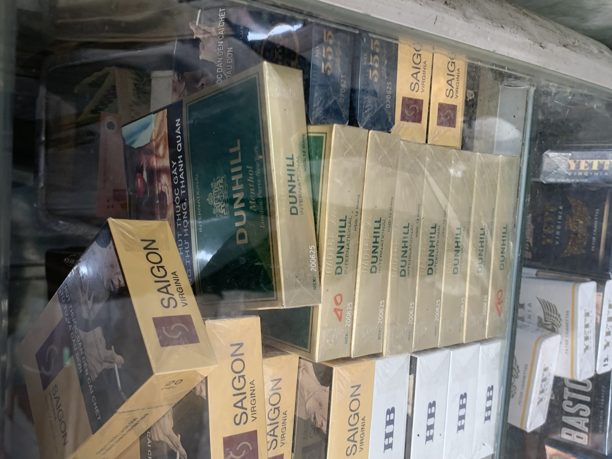
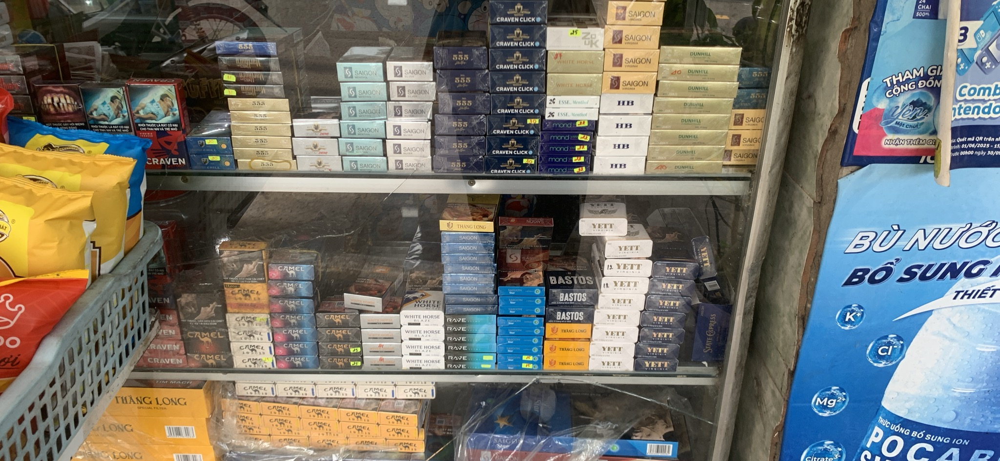
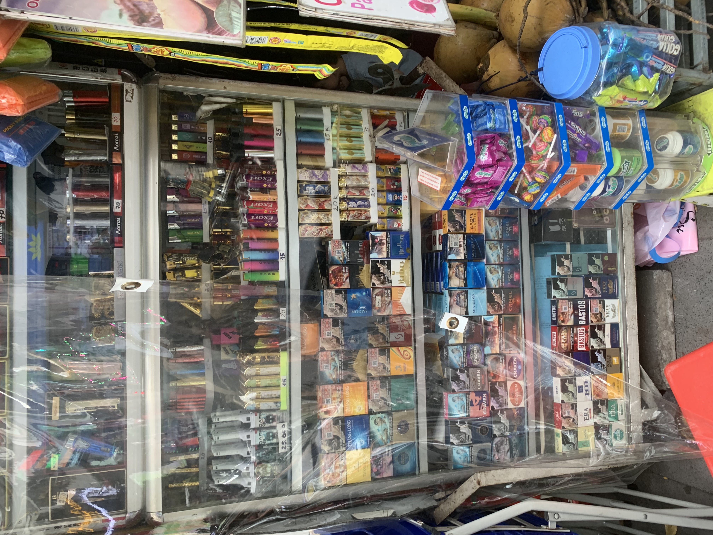
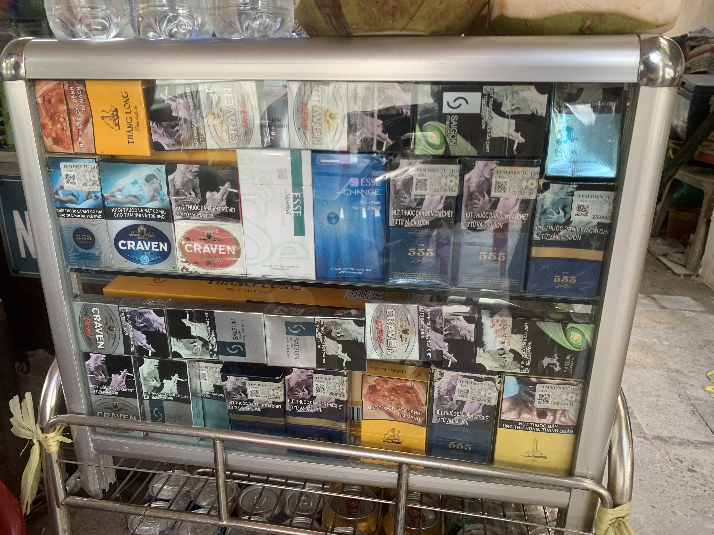
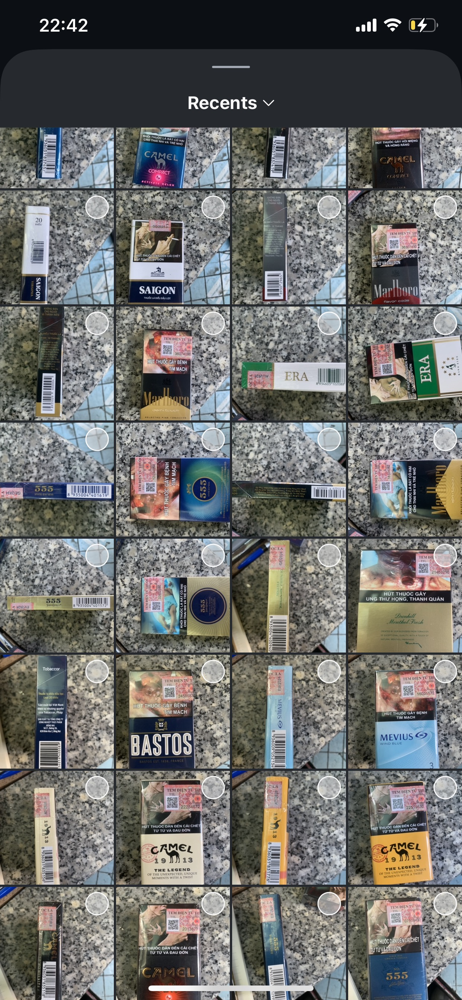
CAFSUS examines the implications of the EU Deforestation Regulation (EUDR) for landscape cover, household livelihoods, value chain structures, and systems of global environmental governance — applying advanced social and data science methods to high-resolution satellite and primary data from the coffee value chain.
Tasks
- Survey implementation
- Data cleaning and report writing
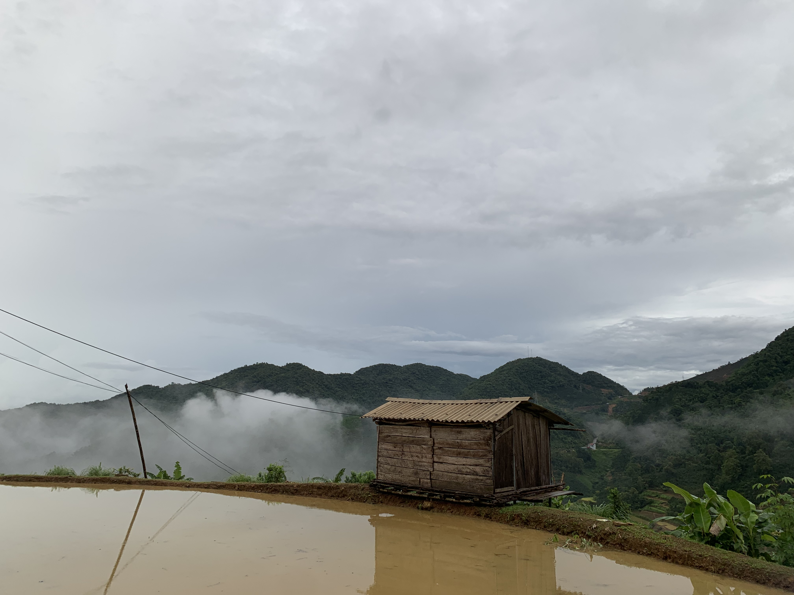

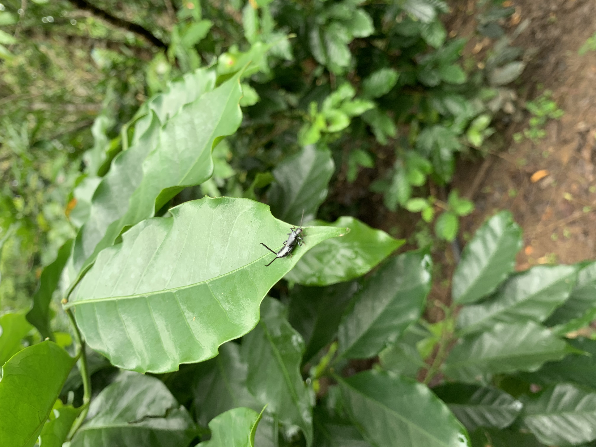

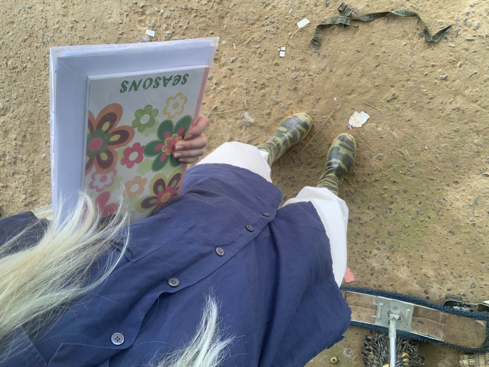
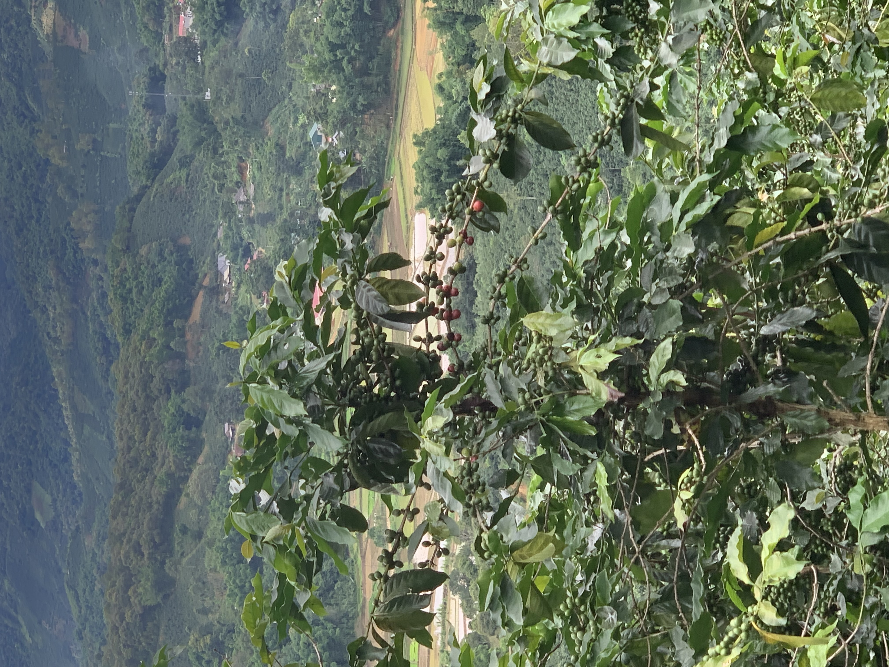
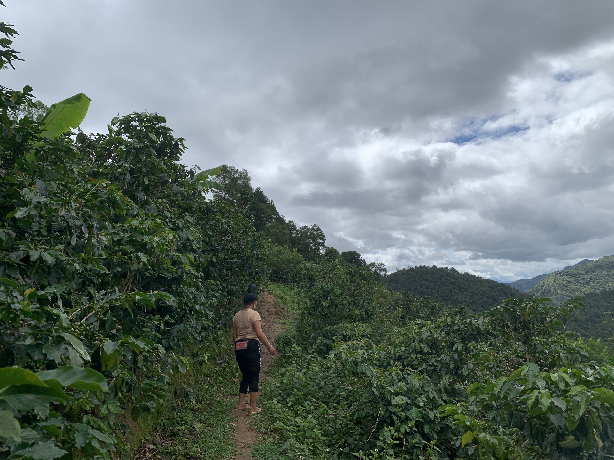
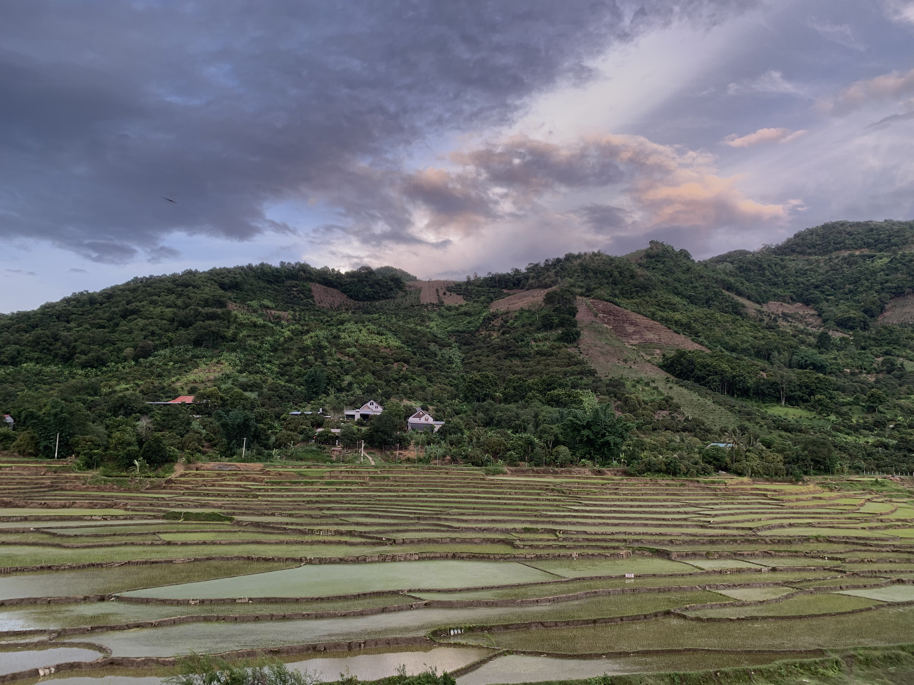
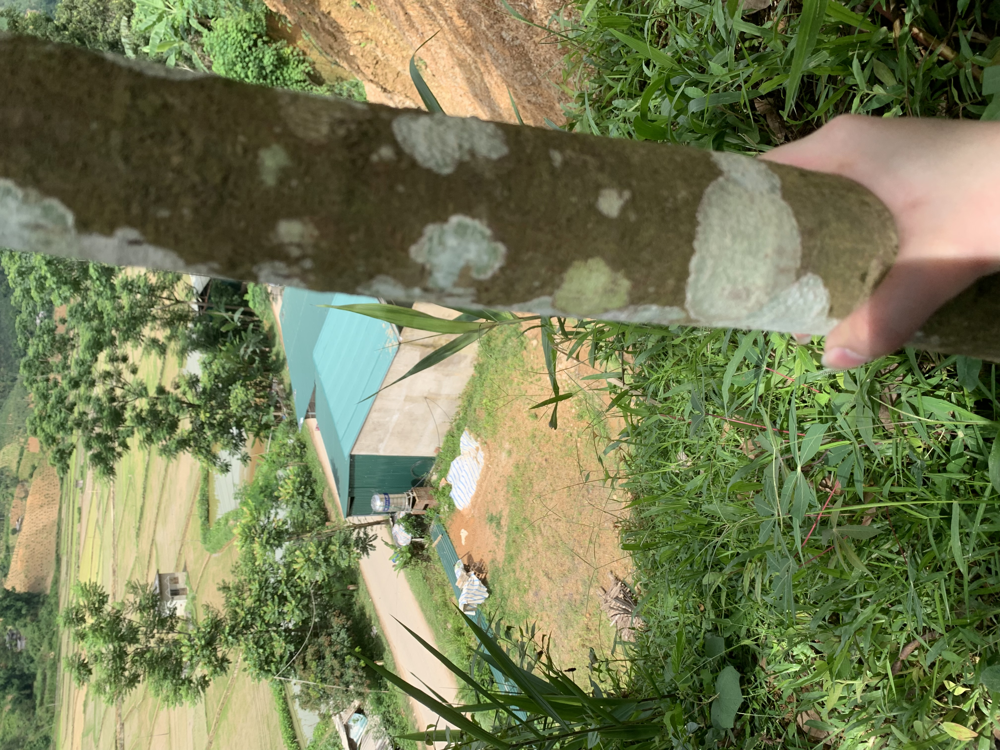
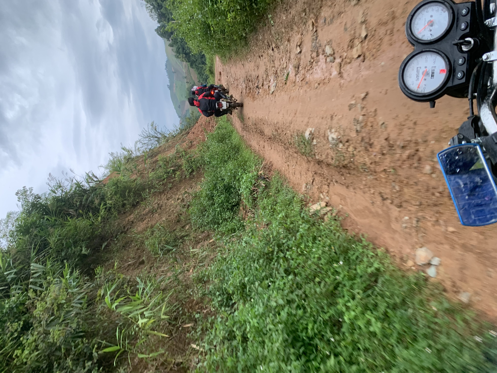
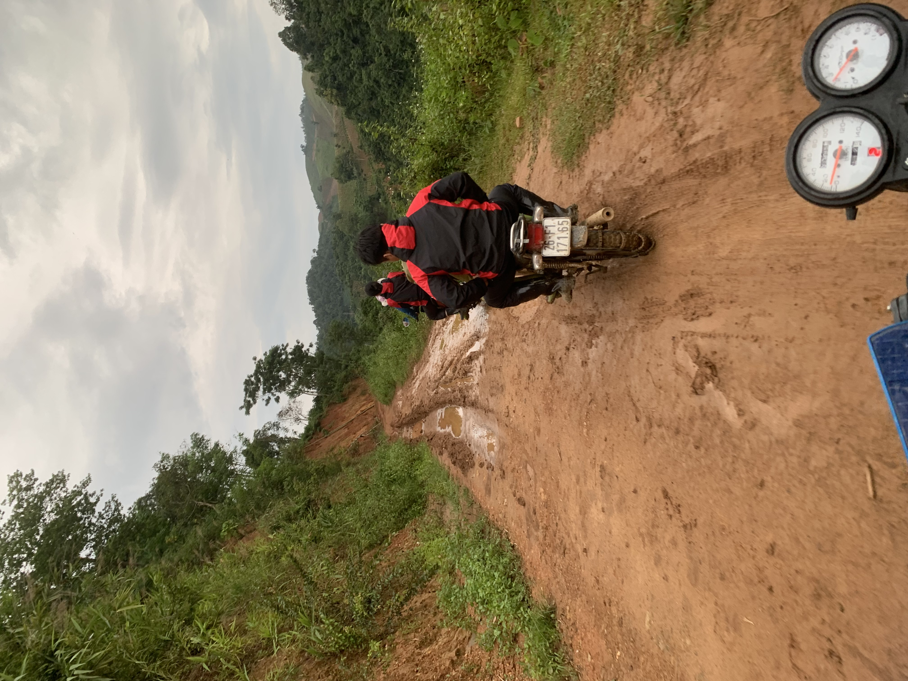